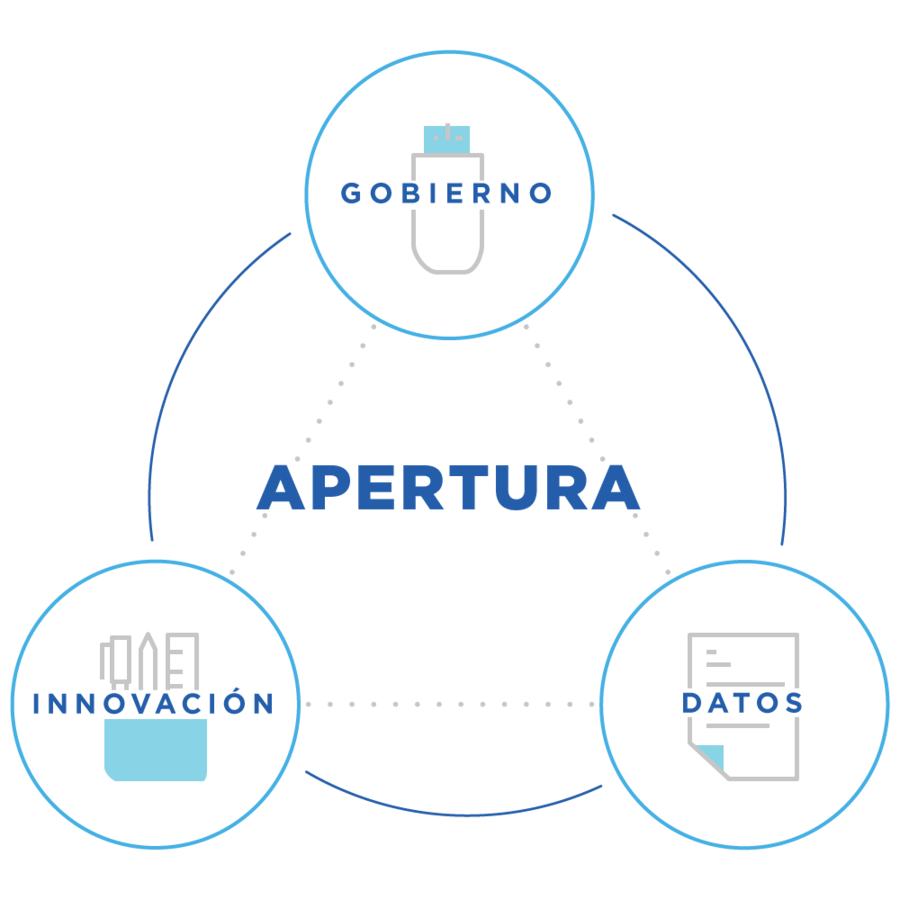

Procesamiento del Lenguaje Natural en el Congreso de la Nación Argentina
Martín Elias Costa
Data scientist
Ignacio Heredia
Desarrollador fullstack
Somos parte del equipo de desarrollo de la
Dirección Nacional de Datos e Información Pública
Formamos parte de la
Subsecretaría de Innovación Pública y Gobierno Abierto
dentro del
Ministerio de Modernización.

Trabajamos de forma transversar a otras áreas de gobierno para promover y mejorar el manejo de información.
Jefatura de Gabinete de Ministros
Flujo de trabajo en Jefatura
- Categorizar preguntas
- Reconocer información reutilizable
- Despachar al área correspondiente
- Revisar calidad de respuesta
- Contrastar contra informes pasados
Presentación de informe frente al Congreso
Nuestro rol en este flujo
- Mejorar el manejo de información
- Categorización asistida a operadores
- Reconocimiento de preguntas similares
Información no estructurada
{
"numero_informe": <int>,
"numero_pregunta": <int>,
"autor": <string>,
"contexto": <string>,
"pregunta": <string>,
"justificacion": <string>,
"ministerio": <string>,
"area_de_gestion": <string>
}
TF-IDF
- Vocabulario generado por todas las palabras disponibles
- Espacio vectorial generado por el vocabulario
- Cada texto es un vector en este espacio
Razonamiento en la construcción del ranking
Mostrar con una query de ejemplo como va mejorando la busqueda
Tentativo: representación visual de TF-IDF

Distancia entre textos ≈ distancia entre vectores
Support vector machines
- Algoritmo para categorización
- Modelo de aprendizaje supervisado desde un set de elementos ya categorizados
- Requiere que la representación de los elementos sea linalmente separables
Separables linealmente

Separables no linealmente

No separables

Tentativo: contar idea del algoritmo y por qué funciona
Hacer foco en que este algoritmo es independiente de la interpretación de los vectores. Mencionar aplicaciones a otras areas.
Volviendo al caso de Jefatura de Gabinete
- TF-IDF para reconocer información reutilizable
- SVM para categorización asistida
- Servidor en Flask para interfaz a usuarios
Impacto en los informes
- Reducción de tiempos de reacción ante un nuevo pedido de informe
- Aumento en la calidad y consistencia de los informes al poder reconocer facilmente preguntas similares
- Reducción en la curva de aprendizaje de categorización para nuevos usuarios
Tentativo: demo en vivo o video
Reutilización de código
$ pip install textar
$ python
>>> from textar import TextClassifier
Repositorio del proyecto
github.com/datosgobar/textar
Nos pueden encontrar en
Y pueden ver esta presentación en
datosgobar.github.io/repo-de-la-presentación